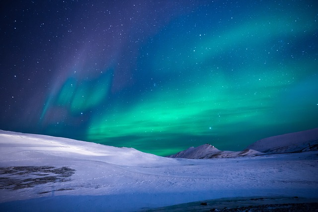
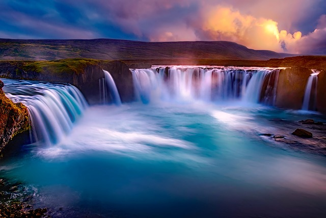

Es un fenómeno en forma de luminiscencia que se presenta en el cielo nocturno, generalmente en zonas polares, aunque puede aparecer en otras zonas del mundo durante breves períodos. En el hemisferio sur es conocida como aurora austral y en el hemisferio norte como aurora boreal (de Aurora, la diosa romana del amanecer, la palabra latina Auster, que significa sur, y la palabra griega Bóreas, que significa norte).
Goðafoss (en islandés, 'Cascada de los dioses' o 'Cascada de los goði') es una cascada ubicada en Islandia. Se encuentra localizada en el municipio de Þingeyjarsveit región de Norðurland Eystra al norte del país, en el inicio de la carretera de las tierras altas de Sprengisandur. Las aguas del río Skjálfandafljót caen desde una altura de doce metros y a lo largo de un ancho de treinta metros.
Vinicunca o Winikunka, llamada también montaña de siete colores, montaña arcoíris o montaña de colores (los pobladores le llaman Cerro Colorado), es una montaña del Perú con una altitud de 5.200 msnm. Está situada en el camino al nevado Ausangate, en los Andes del Perú, Región Cusco, entre los distritos de Cusipata, provincia de Quispicanchi, y Pitumarca, provincia de Canchis